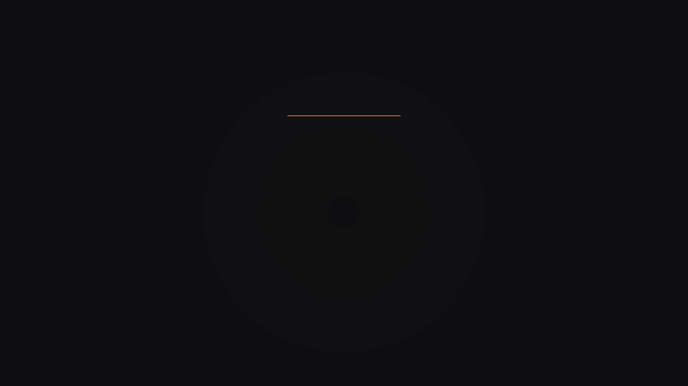
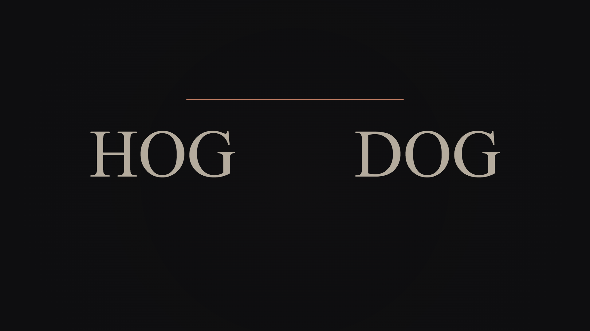
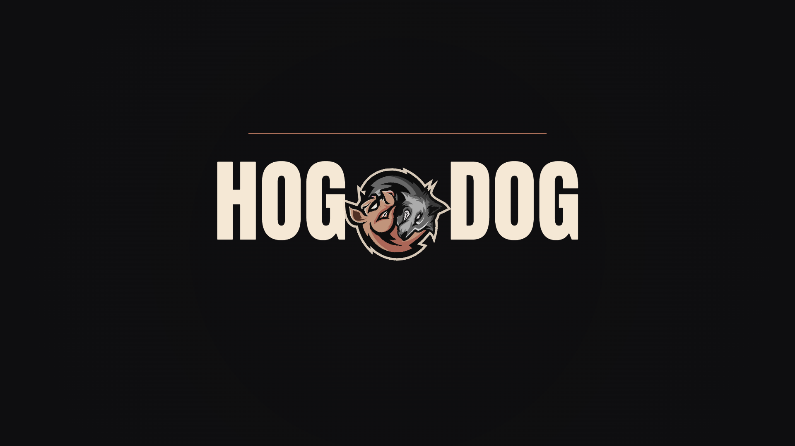
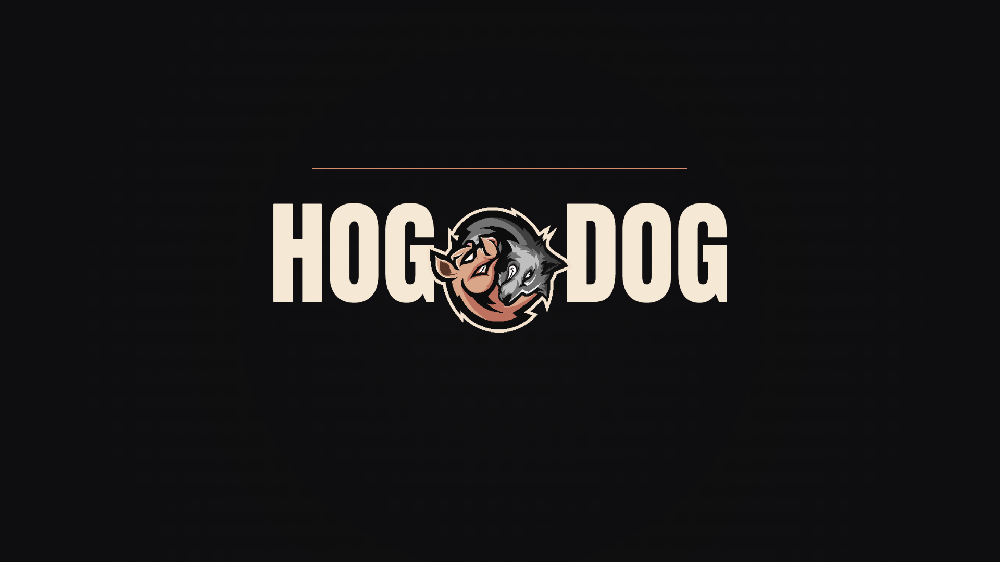
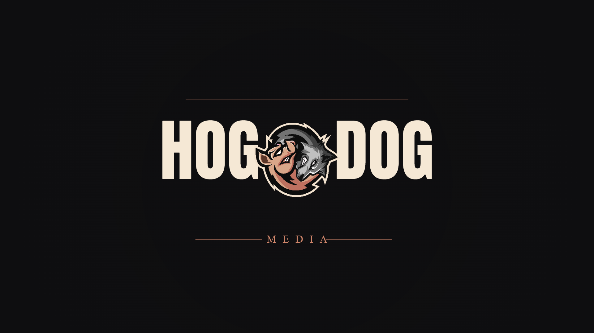
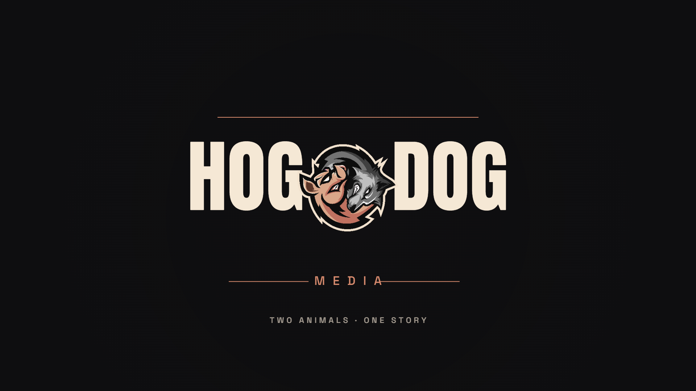
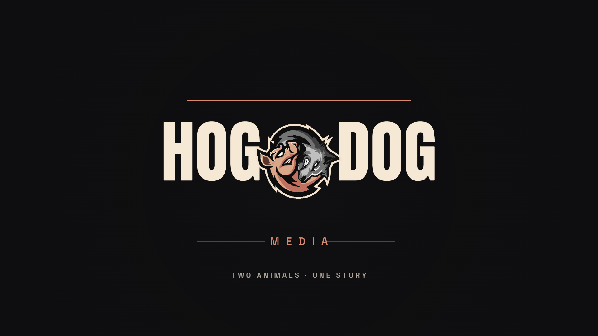
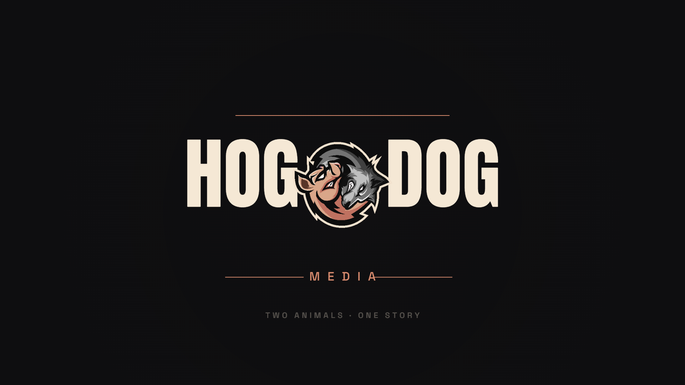

A 3-second motion bumper for video intros — YouTube channel intro/outro, podcast video version, social posts. Pieces fly in, lock together, hold, fade out. Press space to play/pause, drag the timeline to scrub.
Loops automatically. Click anywhere on the timeline to scrub.
Controls: Space play/pause · ← / → seek 0.1s · Shift + arrows seek 1s · 0 reset · drag the playback bar to scrub.
The eight beats of the bumper, rendered at 1920×1080.

0.20s · empty
0.50s · line in
0.80s · words in
1.10s · mascot drops
1.40s · settling
1.80s · MEDIA
2.20s · full lockup
2.60s · fadingWhat this is, technically.
Element-by-element timing breakdown.
Layered entrance — 0.0s → 1.6s
0.15s · accent line sweeps out (outExpo, 0.6s)
0.35s · HOG slides in from left, DOG slides in from right (outQuart, 0.55s)
0.60s · mascot drops with rotation, settles via outBack (0.7s)
1.10s · MEDIA tag fades in with rules extending (outQuart, 0.5s)
1.60s · tagline "Two animals · One story" rises in (outQuart, 0.4s)
Hold — 1.6s → 2.3s
Lockup sits at full opacity for ~700ms — long enough to read, short enough to feel snappy.
Exit — 2.3s → 3.0s
2.30s · everything fades out simultaneously (inQuad easing)
How to take this from HTML to a real video file.